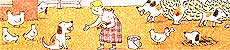

Issue # 108 - November/December 1987
Putting your pet on hen-fruit patrol can be easy.
I don't have to worry about gathering eggs any more because I've trained my dogs to collect them for me. It's a game we play. Dogs really like to work, and it's fun to teach them to help you. Mine fetch firewood and the mail, carry backpacks and work as lifeguards (I live on the shore), while also serving as faithful companions and guardians. For them, gathering eggs is a pleasant diversion.
Any dog past the playful puppy stages-even or eight months-and large enough to comfortably handle an egg in its mouth can learn the game. (Of course, if you're working with an older dog you should always check its teeth for decay or damage before starting any fetch-and-carry training.) I usually work with Bouviers, but I've taught "egging" to collies and mixed breeds too-the kind of dog doesn't really matter. Females, however, do seem to have a lighter, maternal grasp-particularly if they've experienced motherhood. So I prefer to use a female for delicate fetching tasks. Males are able to gather eggs, but females seem to perform the task with less effort.
In any case, don't worry: Eggs aren't as fragile as they seem. In all my training sessions I've had only one egg broken (by a rambunctious pup). So don't be nervous-you and your dog aren't going to end up with egg on your faces. To start, your dog should already respond to basic commands such as "down," "come," "stay," etc. Any previous fetch-and-carry experience is helpful, but not necessary. To become a successful egger, the dog needs to learn only three special commands: "pick it up," "easy," and "release." (Of course, if your pet already responds to instead of "pick it up," for example, or "let go" in stead of "release," there's no need to teach the new ones.)
Most dogs learn "pick up" readily. Just place an object the dog likes-a favorite toy, a small soup bone, whatever-within the dog's reach. Then point to the item while giving the command "pick it up," and lavishly praise the dog when it picks up the object on command and brings it to you. I've been training dogs for over 15 years and have never encountered one that wouldn't respond to "pick it up" almost immediately.
The command "easy" is best taught by offering both a treat and generous praise (some trainers say praise alone is sufficient, but I get better results faster by offering a tangible reward as well). Hold a treat between your fingers and offer it to the dog while giving the command "easy," but release the treat only if the dog reaches for it in a relaxed manner. If your dog snaps or grabs, withhold the reward and scold the animal with a firm "no." Offer the treat again with the command "easy," and give it to the animal, along with abundant praise, if the dog responds accordingly.
"Release" is the easiest command to teach. Steady the animal's head with one hand and, while giving the command "release," gently move your other hand toward the dog's mouth to receive the object. If the dog is reluctant to let go, sternly say the dog's name and repeat the command "release" while forcibly removing the object from the dog's mouth. Even if you have to take the object, give the dog praise so it'll know that "release" is the expected behavior. Then repeat the process until the dog lets go of the item on its own.
Most dogs can learn these commands in only a few sessions. It's often best to limit a day's training to a single command and wait till the next day to start on a new one. Naturally some dogs do learn faster than others; a few of my "students" have become proficient eggers within a couple of days, while others have taken longer (two weeks was the longest). Just don't rush your pet; be patient. Remember, this is a game.
When your dog can carefully pick up an object and give it to you, you can start teaching it to retrieve eggs. Round up some plastic foam cups, and wait for a time when the dog isn't tired or hungry so you'll get its full attention. Ready? Place a plastic foam cup on the lawn, step away from it, and direct the dog's attention to the cup by pointing at it. Then give two commands: "Pick it up . . . easy."
When the dog picks up the cup, call the animal to you and give the command "release" while you gently remove the cup from the dog's mouth. Lavishly praise the dog, even if the cup is punctured. Lots of praise will quickly instill positive behavior. Repeat the process until the dog is comfortable with the procedure-this might take only a few minutes, or several sessions.
Once your dog is successfully retrieving cups that are in plain view, start putting them in easy hiding places-under hedges or shrubs, in sheltered areas or in the shadows, anyplace a free-range chicken might choose to lay an egg. Make a big game of it by walking your dog around the yard and giving lots of praise (and perhaps a treat) every time it finds and retrieves a cup.
When your dog is consistently picking up the cups and giving them to you, and if the cups are only slightly punctured, your pet's ready to retrieve real eggs. Put the eggs in plain sight first, and when the dog retrieves those, start hiding them in easy-to-find places. Again, make a game of it, and give your dog lots of praise and encouragement every time it finds an egg.
Eventually, your pet will play "find the egg" all on its, without commands from you. It'll search for, pick up and deliver eggs to you as long as you give it lots of love and praise (which, of dog to do any task).
|
 |
|
|